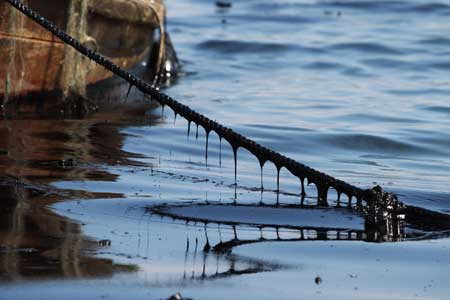

По сравнению с 2008 годом класс качества вод бухты Золотой Рог изменился с VI класса « очень грязные» на V класс «грязные», бухты Диомид - с V класса «грязные» на IV класс «загрязненные», пролива Босфор Восточный - с V класса «грязные» на IV класс «загрязненные». Не изменился класс качества вод Уссурийского залива (IV класс «загрязненные») и залива Находка (III класс «умеренно загрязненные»).
Класс качества вод Амурского залива, рассчитанный за два осенних месяца (в 2008 году - за 5 месяцев), изменился с V класса «грязные» на III класс «умеренно - загрязненные». Снижение класса качества вод Амурского залива не говорит об улучшении его экологического состояния. По многолетним данным наибольшее загрязнение в заливе происходит в весенний - летний период, а в 2009 году наблюдения в эти периоды не проводились из-за отсутствия плавсредств для отбора проб.
Нефтяное пятно в Бухтах Большая и Малая Кубанка Хасанского района Приморского края
По сравнению с 2008 годом уровень загрязнения нефтепродуктами в бухте Золотой Рог снизился в 2,5 раза, в б. Диомид - в 3,7 раза, проливе Босфор Восточный - в 1,8 раза, в Амурском заливе - в 2,9. В Уссурийском заливе наблюдается рост загрязнения нефтепродуктами, в 2009 году среднегодовая концентрация в 1,2 раза превысила среднегодовой показатель 2008 года. В заливе Находка среднегодовая концентрация нефтепродуктов практически не изменилась. В Амурском заливе среднегодовая концентрация нефтяных углеводородов в 2009 г. снизилась в 2,9 раза.
Наряду с некоторым уменьшением загрязнения вод бухт Золотой Рог и Диомид и пролива Босфор Восточный нефтепродуктами, отмечен рост их содержания в донных отложениях этих акваторий: двукратный в бухтах Золотой Рог и Диомид и в 1,5 раза в проливе Босфор Восточный.
Наименее загрязнены нефтяными углеводородами донные отложения Уссурийского залива, наибольшее загрязнение отмечено в бухте Золотой Рог. В 2009 году не произошло существенных изменений общей численности бактериопланктона и его биомассы на всех акваториях.
Значительных изменений в численности сапрофитных гетеротрофных бактерий на исследуемых акваториях по сравнению с 2008 годом также не отмечалось. По данным социально-гигиенического мониторинга в 2009 году качество морской воды в местах водопользования населения в целом по Приморскому краю ухудшилось по санитарно - химическим показателям, по микробиологическим показателям произошло некоторое улучшение.